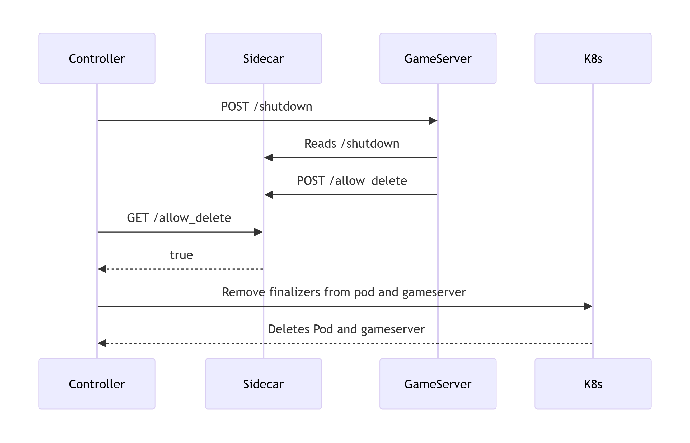

Sidecar
The sidecar pattern is widely used in Kubernetes. It typically involves running a secondary container alongside the main application container to provide additional functionality. You can read more about the pattern here.
In this project, the sidecar acts as a communication bridge between the controller and the game server.
The sidecar exposes a simple REST API with a few routes that the server and controller interact with.
Routes
The sidecar provides the following endpoints:
GET /allow_deletePOST /allow_deleteGET /shutdownPOST /shutdown/health
Allow Delete
The allow_delete routes are used to check or set whether the server is allowed to be deleted.
GET /allow_delete— Retrieve whether deletion is allowed.POST /allow_delete— Set whether deletion is allowed.
Both the GET and POST methods operate on the same internal boolean value.
Request Format
JSON Example:
{
"allowed": true
}
Go Struct Example:
type DeleteRequest struct {
Allowed bool `json:"allowed"`
}
The boolean value controls whether the server considers itself safe to delete. * The controller usually issues GET requests to check the status. * The game server typically issues POST requests to update the status.
Note:
Be cautious when toggling the
allowedstate back tofalse. If the controller detectsallowed = true, it may already begin the deletion process, even if you immediately set it back tofalse.
Shutdown
The shutdown routes indicate whether a shutdown has been requested for the server.
GET /shutdown— Retrieve whether shutdown has been requested.POST /shutdown— Set whether shutdown has been requested.
Similar to allow_delete, these routes operate on an internal boolean value.
Request Format
JSON Example:
{
"shutdown": true,
}
Go Struct Example:
type ShutdownRequest struct {
Shutdown bool `json:"shutdown"`
}
The controller sets this flag once it detects a deletion timestamp on the Server object.
The game server can poll this value to detect when a shutdown has been requested and gracefully handle it.
The communication workflow can be viewed here: 